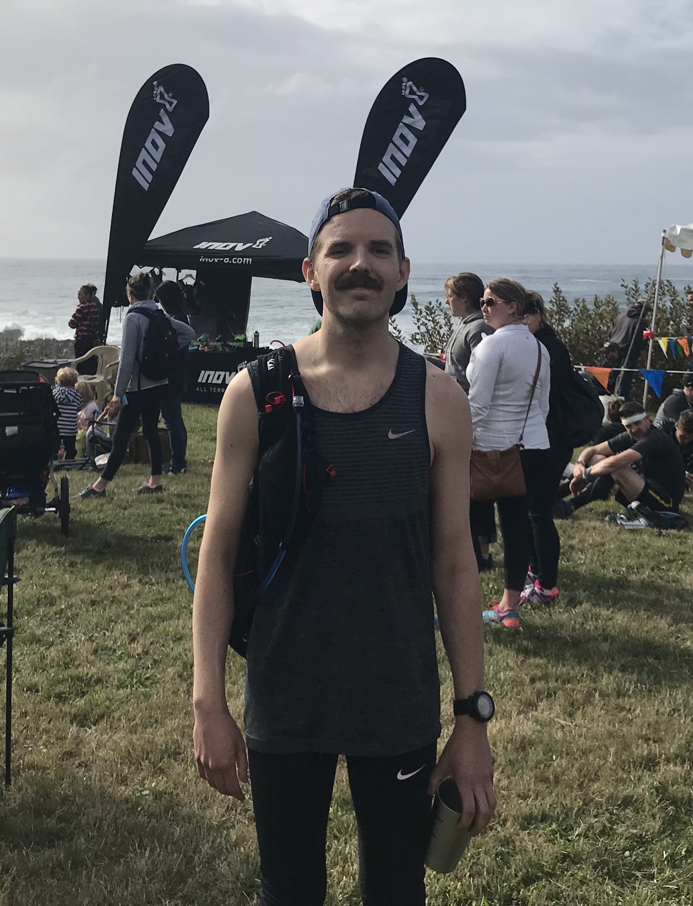

I am a software engineer specializing in full-stack development and Javascript frameworks, such as React.js and Node.js. As a former accountant of 10+ years, I thrive when working with engaged teams to find solutions for clients. I believe in committing to mastery in all situations and thereby fully enjoying the process, whether it be work or personal endeavors.
When not coding, I am an avid trail runner and spend a lot of time running in forest park or on the endless trails in Oregon and Washington. I ran my first ultra-distance marathon in 2017 (Oregon Coast 50k) and love being a part of the trail running community here in the Pacific Northwest. When I am not running, I enjoy hiking and camping with my dog, Jefferson.
